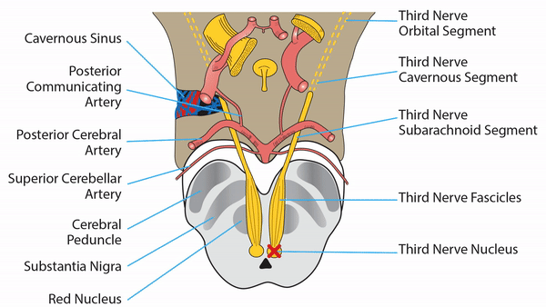

Third Nerve Pathway

- Cranial nerve that supplies the medial, superior, and inferior rectus muscles and the inferior oblique muscle to provide ipsilateral adduction, supraduction, infraduction; also supplies the levator palpebrae superioris to provide elevation of the upper lid, the ciliary muscle to provide accommodation, and the iris sphincter to provide pupil constriction
-
- Five anatomic segments: nuclear, fascicular, subarachnoid, cavernous, and orbital

-
Signals originate in a cluster of paramedian midbrain nuclei
- Somatic subnuclei mediate adduction (via the medial rectus), supraduction (via the superior rectus and inferior oblique), infraduction (via the inferior rectus), and upper lid elevation (via the levator palpebrae superioris)
- Parasympathetic (Edinger-Westphal) subnucleus mediates accommodation (via the ciliary muscle) and pupil constriction (via the iris sphincter muscle)
- Axons leave the third nerve nuclei and travel ventrolaterally, passing through the red nucleus, substantia nigra, and cerebral peduncle, gathering as a single nerve that exits the brainstem in the interpeduncular fossa
- Nerve traverses the subarachnoid space between the posterior cerebral artery and the superior cerebral artery, passing inferolateral to the junction of the posterior communicating artery and the internal carotid artery
- Nerve leaves the subarachnoid space to enter the cavernous sinus in its superior outer wall
- In the cavernous sinus, the third nerve divides into a superior division, supplying the levator and superior rectus, and an inferior division, supplying the medial and inferior recti and the inferior oblique
- Nerve leaves the cavernous sinus to enter the orbit in the superior orbital fissure, entering the muscle cone
- Parasympathetic portion of the third nerve splits off from its inferior division to synapse in the ciliary ganglion; short posterior ciliary nerves leave the ciliary ganglion to enter the posterior scleral wall, eventually supplying the iris sphincter for pupil constriction and the ciliary muscle for accommodation


-
Lesion of the nucleus
- Produces ipsilateral deficits in adduction and infraduction
- Produces a contralateral deficit in supraduction because of crossed innervation of the superior rectus muscle
-
Tip: lesions of the third nerve nucleus are extremely rare!
-
Lesion of the fascicles
- Produces a complete or incomplete third nerve palsy
- Common cause: infarct of proximal posterior cerebral artery penetrating arteries to the midbrain and thalamus ("top of the basilar syndrome")
- May be accompanied by an ipsilateral or contralateral limb tremor or ataxia because third nerve fascicles pass through the red nucleus and the superior cerebellar peduncle
- May be accompanied by contralateral limb weakness because exiting fascicles pass near the cerebral peduncle, which carries corticopontine and corticospinal tracts ("Weber syndrome")
-
Lesion of the subarachnoid segment
- Produces a complete or incomplete third nerve palsy
-
Tip: reversible ischemia—the most common cause of isolated third nerve palsy in adults--occurs here or in the cavernous segment
- Nerve compression by aneurysm occurs at the junction of internal carotid and posterior communicating arteries, the apex of the basilar artery, and at the take-off of the superior cerebellar artery
-
Tip: in compressive third nerve palsies, including aneurysm and uncal herniation, a dilated and poorly constricting pupil often occurs because compression impacts the periphery of the nerve, where pupillomotor axons lie; however, compressive lesions may sometimes spare the pupil
- Inflammation and intrinsic nerve tumors also affect this segment of the nerve

-
Lesion of the cavernous segment
- Produces a complete or incomplete third nerve palsy, often in combination with other ocular motor palsies, trigeminopathy, or Horner syndrome
- Common causes: pituitary tumors, intracavernous aneurysms, tumors, inflammations, and fistulas
-
Lesion of the orbital segment
- Lesions confined to the orbit, even the posterior orbit, rarely produce deficits in third nerve function because the nerve enters the proximal portions of the extraocular muscles and levator; ductional deficits and ptosis from orbital lesions are more often the result of obstruction, weakening, or scarring of the extraocular muscles
-
Lesion of the ciliary ganglion or ciliary nerves
- Produces ipsilateral mydriasis and impaired pupil constriction to light, but no ductional deficits or ptosis
- Produces slow (“tonic”) pupil constriction to a near target and slow redilatation when gaze is redirected from near to far
- Tonic pupil is usually idiopathic, but may be caused by orbital trauma (including surgery), inflammation, cyclocryotherapy, or dense retinal photocoagulation
